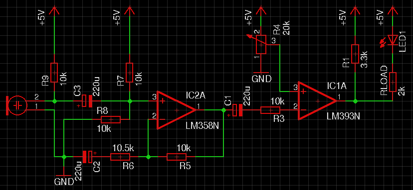
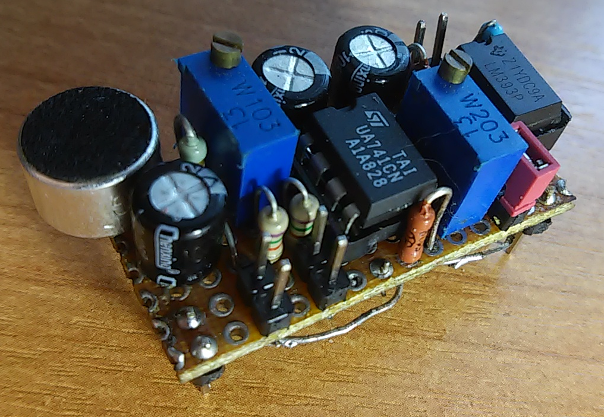
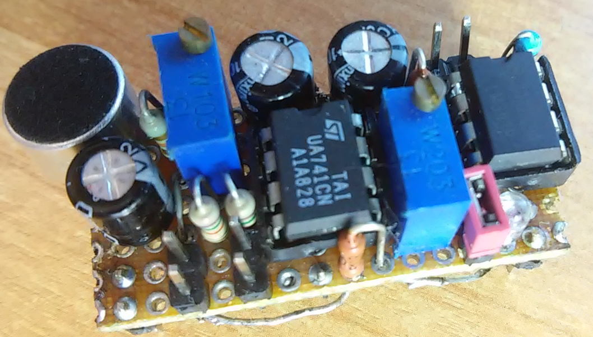

Питается от 5В однополярных.
LM393 - компаратор с открытым коллектором, т.е. нагрузка к его выходу подключается минусом.
R4 - потенциометр, с помощью которого задается порог срабатывания.
R5-R6 - определяют степень усиления. При увеличении R6 увеличивается коэффициент усиления.
R7-R8 - делитель напряжения, чтобы задать среднюю точку на входе ОУ.


